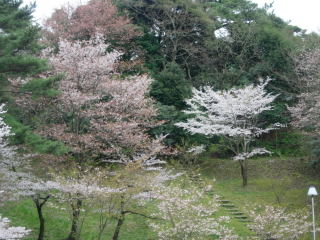
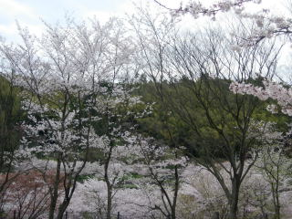
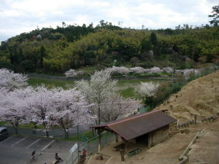

愛宕山で桜の花見
2010/04/10
だいぶ花が散ってますね。

山の斜面に桜があるのって綺麗ですね。満開な時のここの景色を見てみたいです。

山側は散っている場所が多く、八重桜が咲いていました。

山の下側と池の近くはちょっと寒いみたいで、満開でした。
北側なのと、水辺だからですねか？遅めの花見にいい場所かもしれません。
2010/04/10
だいぶ花が散ってますね。

山の斜面に桜があるのって綺麗ですね。満開な時のここの景色を見てみたいです。

山側は散っている場所が多く、八重桜が咲いていました。

山の下側と池の近くはちょっと寒いみたいで、満開でした。
北側なのと、水辺だからですねか？遅めの花見にいい場所かもしれません。
花見のついでに動物園もどうぞ。